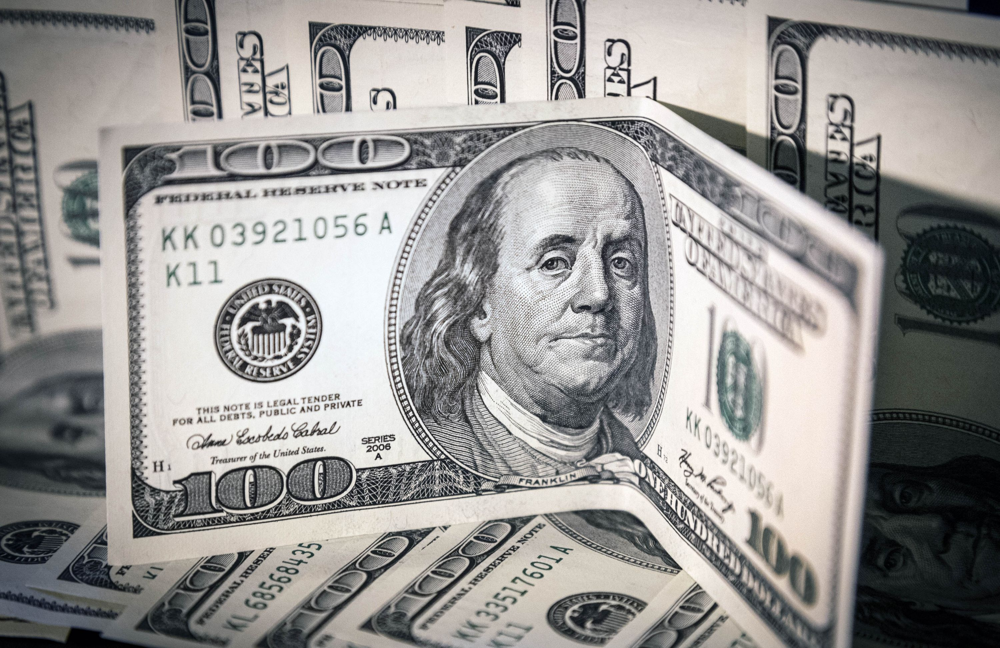

Dólar: cómo analiza el Gobierno la suba de las cotizaciones paralelas y el crecimiento
El “contado con liqui” subió más de 15% en dos semanas y se desarman posiciones de carry trade. En el Poder Ejecutivo argumentan que el BCRA aún acumula divisas y que la meta fiscal no está en riesgo
El dólar contado con liquidación anotaba, un par de horas antes del cierre de la cotización, una nueva suba que de manera acumulaba ya era de 16% en las últimas dos semanas, lo que marca el despertar de las cotizaciones paralelas del tipo de cambio y un crecimiento de la brecha cambiaria hacia el terreno del 40 por ciento. En el Poder Ejecutivo ponen paños fríos al alerta en el mercado por la tendencia de las últimas ruedas cambiarias con dos argumentos: que el BCRA aún compra divisas en el mercado y que el ancla fiscal, y por lo tanto el programa económico, no corre riesgo.
La persistencia del aumento en las cotizaciones paralelas del dólar -contado con liquidación, MEP y blue- coincidió con los últimos recortes de tasa de interés en pesos que decidió el Banco Central, que la reajustó de 80% a 40% en espacio de un mes. Eso achicó el rendimiento de las inversiones más tradicionales en pesos, como el plazo fijo, o la actualización con intereses que dan las billeteras virtuales por los saldos que los clientes tienen en sus cuentas.
Fue en ese marco en que comenzó a verse una respuesta en los precios paralelos del tipo de cambio, que habían experimentado una caída nominal sostenida desde los picos de mediados de enero (el CCL llegó a cotizar a $1.381) hasta los primeros días de abril cuando tocó su piso, cerca de los $1.000. Ese atraso en los paralelos, que se dio en un marco de una inflación acumulada en pesos de 106% hasta abril y un ritmo de depreciación del dólar oficial inconmovible en el 2% por mes.
La discusión entre economistas y el Gobierno por la posibilidad de un atraso cambiario no tardó en aparecer. En el equipo económico reiteran que hay precios que sobrerreaccionaron a la expectativa de cambio de mandato en diciembre y que pasaron a costos un tipo de cambio superior a los $2.000. Y que no es comparable de manera lineal un índice de tipo de cambio real -como el que mide el Banco Central diariamente- de la actualidad con el del Gobierno anterior porque las condiciones macro no son iguales, con un superávit fiscal acumulado en el primer cuatrimestre e indicadores monetarios que reflejan una caída de los pasivos remunerados del BCRA.
Ante la consulta de Infobae, fuentes del Gobierno relativizaron el despertar cambiario al mencionaron dos argumentos. En primer lugar, que el Banco Central se mantiene comprador en el mercado oficial. En lo que va de la semana adquirió 315 millones de dólares entre el lunes y martes. La última vez que finalizó la rueda con saldo vendedor fue el 29 de abril, cuando se desprendió de 92 millones.
La pregunta que sobrevuela el mercado es si uno de los techos posibles a la suba de los dólares de las últimas semanas está marcado por un aumento en el ritmo de la liquidación de granos y el ingreso de divisas del complejo agroexportador, que lleva vendidos el 31% de la cosecha gruesa, mientras a esta altura de otros años ya llevaba un 38 por ciento, según estimaciones de la consultora 1816.
Volver a inicio